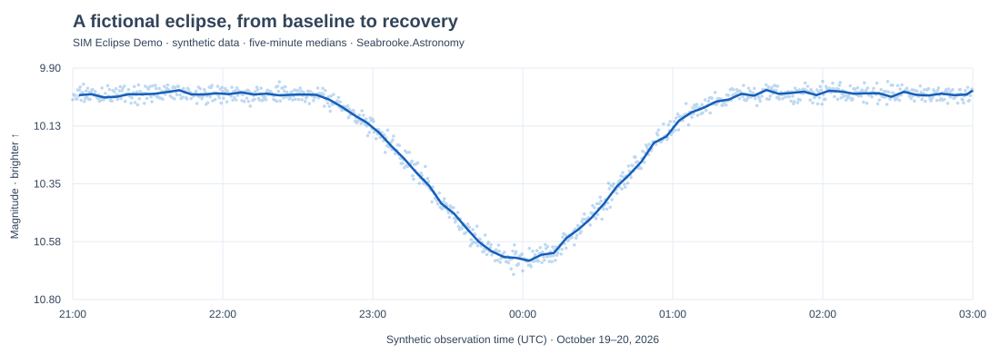

Photometry · Available now
Seestar Photometry Analyzer
Turn Seestar CSV measurements into interactive stellar light curves. Explore clock-aligned medians, inspect tracking stability, and export charts and reports—all within your browser.
Light curves · Tracking diagnostics · Synthetic eclipse demo

Preview from the included synthetic eclipse dataset. Not real stellar observations.